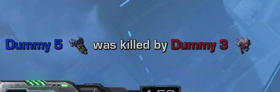
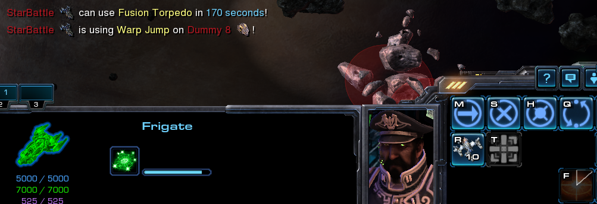
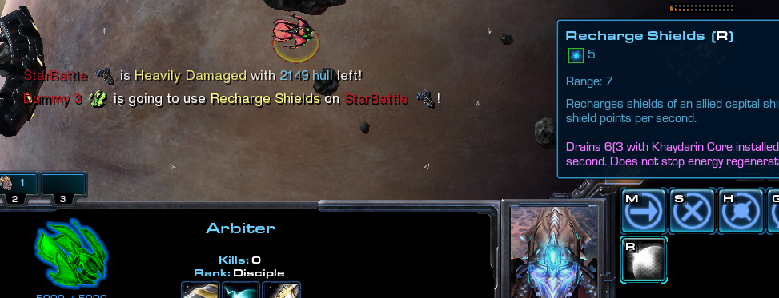

Install menu on capital ships will now be sticky - meaning it won't close automatically after ability is acquired. And will be consistent with the way Upgrade menu operates.This change may require some time to get used to, and wasn't exactly planned. However that inconsitency has shown to be a problem during implementation of ability callouts, and had to be either worked-around, or changed.
Air Formation Diameter from 8 to 13 - units are now more likely to maintain formation.How likely, mostly depends on whether all selected units are within defined diameter. As well as on distance from the central position of selected units, in relation to the new order. Basically moving over long distance maintains formation, moving short distance not so much, but that's desired to provide a way of clumping units.
This change was initially aimed at Broodlord + Corruptors combo - to make them easier to micro. However, it effects all units - regardless of who controlls them, and how (that includes OBF). It also affects AI fighters, and everything that moves as a group - specifically, when the same order is issued to a group of units, thus Carrier's Tempests are unaffected for instance.
As noted, this is experimental change due to the fact it also affects AI fighters. Further testing is required to determine whether it'll factor positively, or negatively. In case of the latter, we'll use another method, that will work on per-player basis.
Introduced callouts feature, which allows to ping certain UI elements, as a way of reporting various events to the team - hence "callouts". It's inspired by Heroes of the Storm.
Currently supported UI elements:
etc.
To trigger a ping, use MiddleMouseButton on any of the above elements, and everything relevant that's represented by the UI element, will be reported in team's chat.


Notice: MiddleMouseButton can be changed in the Hotkeys menu in SC2 options to suit player's preferences.
Why not
Alt+LeftMouseButton?Technical limitations.. it's likely possible to make it work with
Alt+LMB, but it migt have some unwanted side effects. Furthermore that specific combinations of keys (involvingAltas a left click modifier) is simply difficult to "catch", and for now it was deemed as something not worth the time needed for experimenting. It'll likely be revisited in the future, though.
Balanced:Team 2 aka Optional slots being taken as game participants (they'd get the capital ship), if there was less than 12 human players in the lobby, and TrustGate was disabled.Premade / IH:FFA team setup, to include all players and force autobalance as it was previously.Elite Colors.This required introducing custom race definition - only for the purpose of maintaining consistent UI interface, that's immune to built-in races, or player selected console skins.
Thus these changes also carry a bit further - to SC2 Menus, or Observer interface. If something has been changed for worse, please report it.